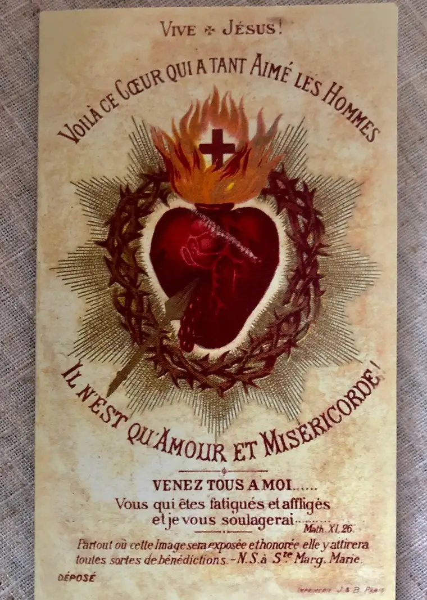
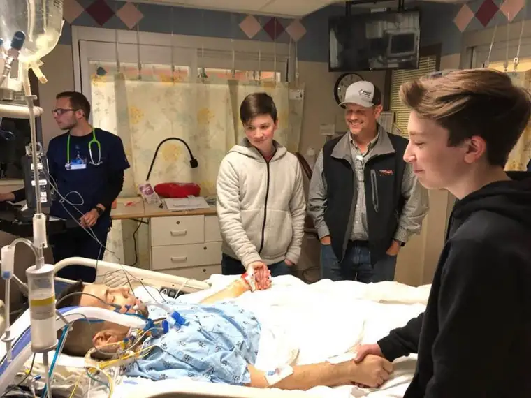
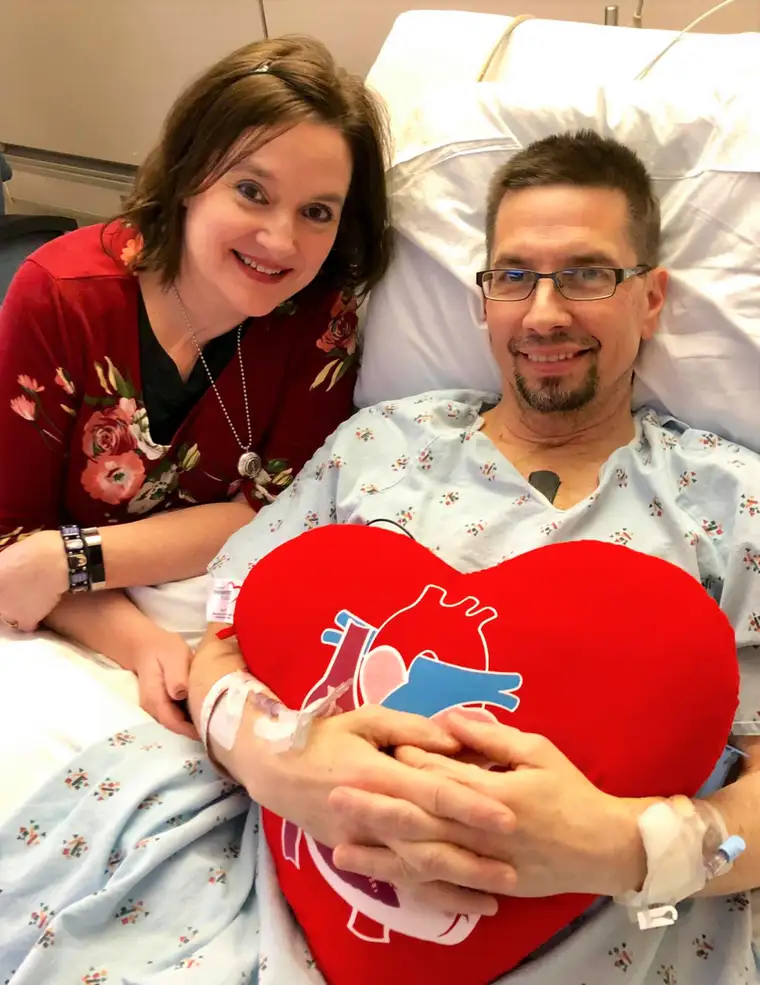
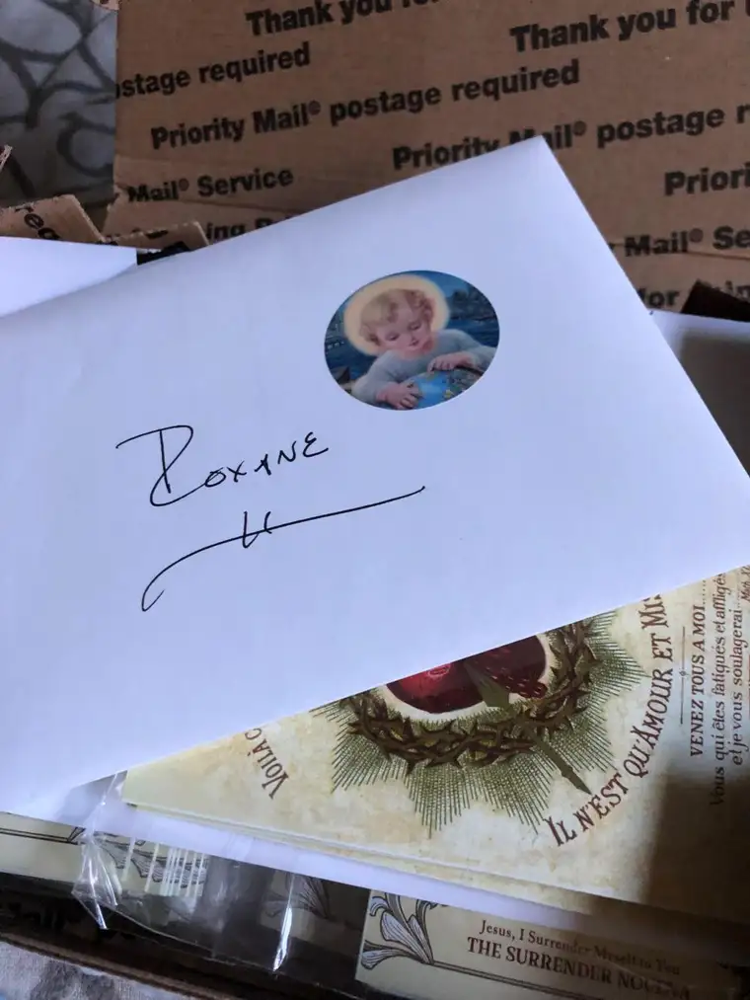

It’s not that I would never do another novena or prayer than the one that changed my life. But the fact of the matter is, when you find something really good, really effective, and, yes, life-changing, all else pales in comparison.
Like a good wine. The right coffee creamer. That riveting book.
And, yes, the perfect prayer.
I’m beginning with the assumption that you already know that a novena is a prayer that lasts nine days, and each day includes a certain prayer. Usually, parts of it are the same day to day, and other parts are different.
It is not superstition, though some claim miracles have happened during the recitation of a novena, particularly on Day 9. I don’t know that I’ve experienced such a miracle, but I do know that, in many ways, this prayer has become a miracle in our lives.
It’s called, in full, “Novena to the Surrender of the Will of God,” or, “The Surrender Novena,” and it’s gotten my husband and me through two open-heart surgeries in a matter of less than two years.
My husband is a convert to the Catholic faith, and had never prayed a novena before the fall of 2017. It was then that I acquired a card with this novena written inside it by a friend.

The gift coincided with the timing of my husband’s doctor appointment, at which he learned his heart was leaking and would require major surgery. Shortly after this startling news, he was struck by a small image of the Sacred Heart of Jesus I’d taped to our bedroom mirror. Seeing his response to the image reminded me of the novena card I’d clipped to my car visor.
After retrieving the card, I showed it to my husband, explaining how I’d acquired it. He was drawn to it, and willingly agreed to try the novena prayer together.
The Surrender Novena soon became our mantra. The words accompanied us into his doctor appointments, to the hospital the day of his first surgery, in and out of ICU, and through that first recovery. A year later, in Dec. 2018, we learned that not only was the leak back, but his body was now killing his red blood cells, causing hemolytic anemia. After coming to terms with what this might mean, out came the Surrender Novena, and up went the prayers. Often, when we’d get to the finish and repeat the ending words, “O Jesus, I surrender myself to you. Take care of everything,” 10 times, we’d hold hands. In the dark, in the light, wherever we happened to be praying.
The words of the novena, received by Fr. Dolindo Ruotolo (1882-1970), spiritual director to Padre Pio, from Jesus, were, at times, our only solace. Additionally, they became words my weary husband chose to bring with him as he was being wheeled, for the second time, into a cold surgical room, where his chest would be sawed open again, and surgeons would work for nearly two hours to get through scar tissue and to the center of his heart to repair ruptured mitral-valve cords.
These words were his hope, his consolation, and the way he was able to let go and give his life fully over to God in what would have otherwise been a totally terrifying moment.

That second surgery, which happened May 2 at St. Mary’s Hospital in Rochester on the campus of Mayo Clinic, seems to have been very successful, based on early assessment. Recovery has been much better, his anemia seems to be reversing, and he recently started back to work part time, just a little over a month post-surgery. In the last weeks, his Fitbit has been registering 20,000 steps many days, and he’s resumed his daily morning regimen of riding his stationary bike.
Did the novena effect a miracle in my husband? We prayed it before his first surgery, and ultimately, that repair seems to have been incomplete. However, his heart also flatlined the moment his chest was opened, and he lived. And then, despite having gone through extreme duress these past months trying to figure out just what was wrong, and why, my husband has now lived through a second major surgery, and our hope in his life has been restored.
I do believe a miracle has occurred. My husband is still with us. Praise God! But beyond that, both of us have become more dependent on God and have a more palpable sense of His love for us. We more clearly understand that our lives, each moment of them, are in His hands. And because we’re still here, our hearts beating, we trust God still has something important for us to do on earth, before he brings us back to Himself eternally.
When I mentioned this novena to my good friend Ann, she said, “It’s the only novena I say these days.” I agree that this one, of all the novenas out there, rises to the top. For my husband and me, this prayer has become the go-to prayer, especially in times of great uncertainty. There are no better words to hear in such moments than our Lord’s, assuring us that he will “…take care of everything.” What a solace, blessed assurance, and sweet relief!

You can look up the prayer online, and I’ve shared it that way before, but I would highly recommend finding the prayer card. It is beautiful and has the Sacred Heart of Jesus on its cover. “Wherever this Image is exposed and honored, it will attract all kinds of blessings,” St. Margaret Mary Alacoque has shared about her own message from Jesus, as explained in the card, along with, “Behold the Heart that has loved mankind so much. It is pure Love and Mercy!”
Full of Grace USA sells these novena cards, and I would urge you to check out their website. The friend who first introduced me to the novena, Patti, and I recently gave both a mini-retreat and a talk together based on our experiences with this novena. A last-minute inspiration before these events caused us to ask for a rush order of the cards to give out to our retreatants, and we found Lisa at Full of Grace so very helpful and personable. She didn’t ask me to plug her company, but I’ll gladly do it, because her kind and attentive efforts have brought so much blessing.

Because of how this novena has enriched our lives in the past couple years, I have felt inspired to let others know about it. I have also begun adding the prayer card to birthday cards and other gifts, and offering it to those in need.
“…there is no medicine more powerful than my loving intervention,” Jesus told Father Ruotolo, not just for the edification of a priest in Italy born in 1882, but for all of us, here and now.
Q4U: Are you familiar with this novena? If so, how did you learn about it, and how has it helped you? If not, what novenas do you find consoling?